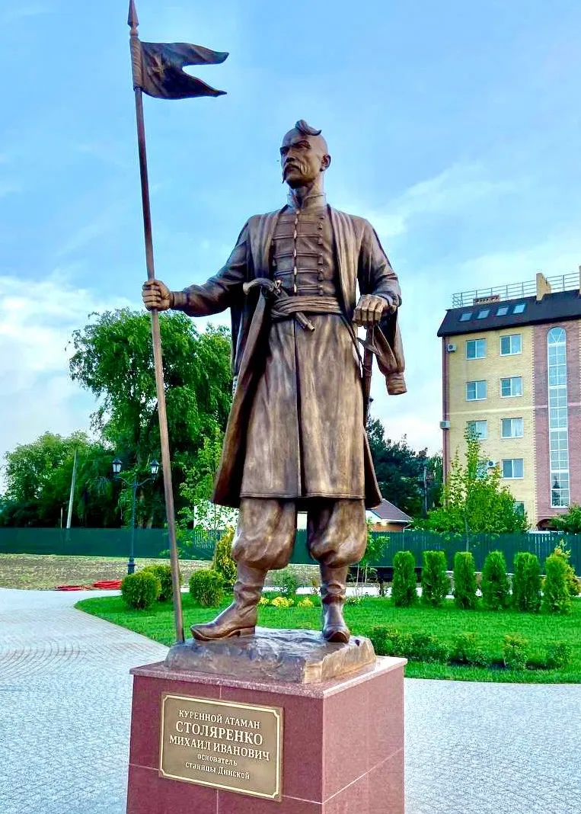

В 1794 году основано куренное селение Динское Черноморского казачьего войска на берегу Кубани, южнее современного расположения станицы. Наименование произошло от Динского (Донского) куреня Сечи, основанного на Днепре выходцами с Дона. В 1807 году курень был переселён на берега степной речки Кочеты. С 1842 года — станица Динская.
В 1888 году через станицу прошла железнодорожная ветка «Екатеринодар — Тихорецкая».
С августа 1942 года по 11 февраля 1943 года станица была оккупирована немецкими войсками.

Динской район в феврале 1943 года был освобожден войсками Северо-Кавказского фронта, которыми командовал генерал-полковник Иван Иванович Масленников. На территории нашего муниципального образования во время войны и после нее располагались три района: Пашковский, Новотитаровский, Пластуновский (с центром в станице Динской). На этой территории 18 дней, с 1-го по 18-е февраля 1943 года, шли напряженные военные действия. При освобождении мало кому известного в России района пали смертью храбрых 2069 советских воинов. Сколько мужества, силы воли и самопожертвования надо было проявить нашим воинам, чтобы освободить хутора и станицы района. Среди событий, сражений Великой Отечественной войны февраль 1943 года останется для нас священной датой. Немеркнущей, благодарной памятью поколений о тех бойцах и командирах Красной Армии, кто в жестоких кровопролитных боях, не щадя жизни, очистил Динской район от немецко-фашистских захватчиков.
31 декабря 1934 года в результате разукрупнения Краснодарского и Кореновского районов
был образован Пластуновский район с центром в станице Пластуновская в
составе Азово-Черноморского края.
Первоначально район состоял из 4 сельских советов: Динского, Кочетинского,
Красносельского и Пластуновского.
21 февраля 1935 года центр Пластуновского района был перенесен в станицу Динская.
20 декабря 1935 года в состав района вошли 2 сельсовета упраздненного
Краснодарского района: Васюринский и Старокорсунский.
С 13 сентября 1937 года район находится в составе Краснодарского края.
22 августа 1953 года к Пластуновскому району был присоединён
Пашковский с/с упразднённого Пашковского района.
26 мая 1961 года Пластуновский район был переименован в Динской.
1 февраля 1963 года образован Динской сельский район.
11 февраля 1963 года в состав Динского района вошла территория
упразднённого Новотитаровского района.
В 1978 году из состава Динского района в подчинение Краснодарскому горсовету был передан
Елизаветинский сельсовет со станицей Елизаветинская.
В 1993 году была прекращена деятельность сельских Советов, территории сельских
администраций преобразованы в сельские округа.
В 2005 году в районе в границах сельских округов были образованы 10 сельских поселений.
Сегодня Динская — это не только историческое место, но и современный
населённый пункт с развитой инфраструктурой, сохранивший дух казачьих
традиций.